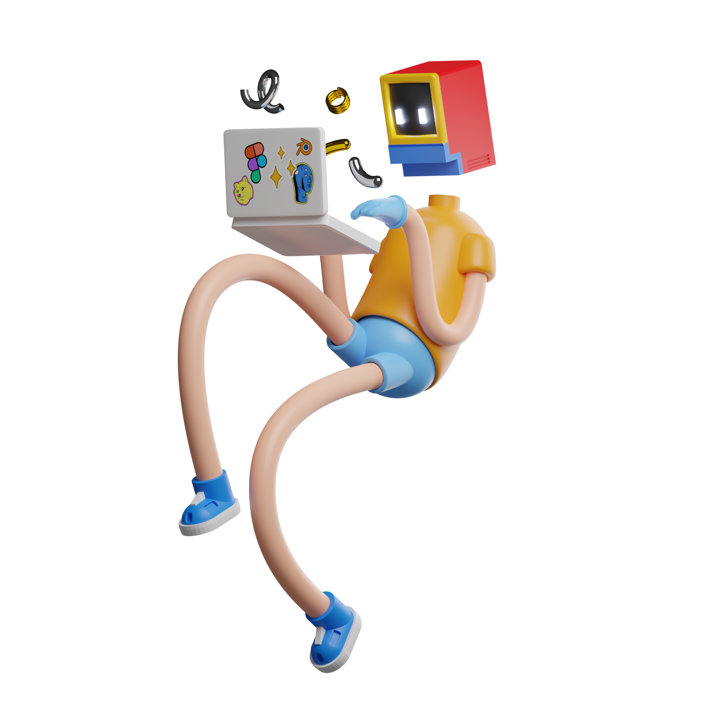

Personal
Networks

- 
Interview of YUCHAN TSENG
1
Briefly Introduce Yourself
I am currently a management trainee, an engineering management trainee. Currently in the rotation phase, working on surgical robots in the robotics department. The status is that I have a lot of work to do every day and need to work overtime from time to time. In fact, it's not that much of work I have to do, it's just particularly happy and ambitious when I get together with my colleagues to do the work. I just really like the atmosphere of work.
2
What's the difference between engineer and art?
I think the difference between art and engineering is that if you need to make something into a product, engineering is enough; but if you want to make it into a commodity, then both engineering and art are needed. It's very difficult to be an artist and an engineer at the same time. I think an engineer is more of a person who does what he is told to do to make that happen. And when you want to be an engineer who can make a commodity, you need to have not only an engineering talent but also an artistic talent, which is rare.
3
If technologies are fully developed, what kind of machines or robots you want to build at most?
Artificial exoskeleton. It's the Iron Man kind, which enhances the body's function as a robot. Not only in the enhancement of existing body parts, but also additional parts. For example: a third hand, or a third leg. In addition, artificial exoskeleton can obtain various gear, to adapt to different people. For example, assistive and rehabilitative robots. A robot to assist the elderly and the disabled in their daily lives. The movement of these robots will be relatively slow and safe.
4
What's the relationship between you and the electronics?
My relationship with electronics. This is a very tricky question. I think that the electronics needs me to understand it. I hope I can learn more about the electronic so that I can play its full role.
5
What's your favorite robot character? Robot artwork?
My favorite product. That is definitely Tony Stark's Mark series. It's the Iron Man suits, that's what I want to do in the future. Incidentally, I think that those who do the design of Iron Man's battle suit must be able to understand the art. I think it is difficult for engineers to design such works that are both aesthetic and mechanical.
6
What do you think about the exhibition of Cybernetic Serendipity? What is the meaning of interaction?
I think both human beings and machines should act. They should do something so that they can interact. I mean not only the machine should be functional, but also human beings should be involved. What's more important, it has to be very interesting and comfortable so that people are willing to have some connection with a set of electronic components. It's better to have a natural feeling as if you're interacting with a real person, not something you're doing intentionally.
7
If you become a robot/human, what superpowers, functions, abilities you want to obtain? Why? What about the least wanted thing?
I wish I could retain my original creativity as a human being, but my brain arithmetic is enhanced, just like computers nowadays. The last thing I want to lose is my creativity and imagination as a human being. Because a program is composed of lines of code, it is never said that a program can change itself, nor a program can constantly self-optimizing. If there is, it should be very interesting.
8
Anything else want to mention?
I think the robots that people are currently using are very simple robots, and the path towards the final form of robotics and artificial intelligence is not the path we are on now. The machine learning we use is all based on the computing power of computers, while neural networks simulate the propagation of electrical signals in the human brain. If we just do the imitation, it will not be able to reach the current height of human intelligence. So I feel skeptical, even a pessimistic attitude towards the current way of development.